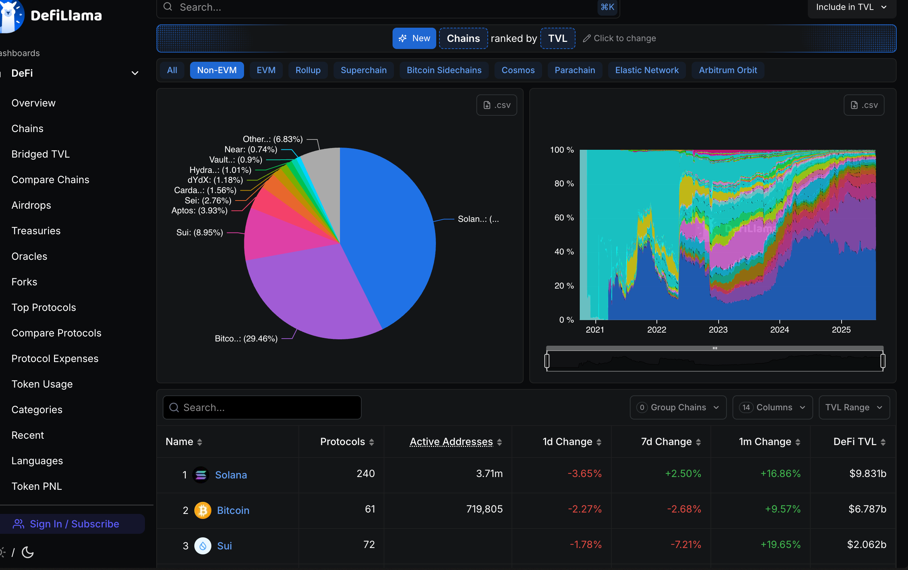

What is NON-EVM ?
1. Giải thích về Non-EVM

Non-EVM blockchains là các nền tảng phi tập trung được phát triển độc lập, không tuân theo các tiêu chuẩn kỹ thuật do Ethereum Virtual Machine (EVM) thiết lập.
Các giao thức Non-EVM (tức là không dùng Ethereum Virtual Machine) có cách tiếp cận rất khác khi thực thi smart contract, với những kiến trúc và tính năng thay thế riêng biệt. Những khác biệt này chủ yếu nằm ở công nghệ nền tảng, ngôn ngữ lập trình, cơ chế đồng thuận, và thiết kế.
Một số ví dụ tiêu biểu:
- Solana: Sử dụng ngôn ngữ Rust nổi bật với tốc độ xử lý cao và thời gian block cực ngắn. Đây là một blockchai hướng tới hiệu năng tối đa thay vì khả năng tương tác giữa các chain.
- Polkadot: Dựa trên nền tảng WebAssembly (WASM) để triển khai smart contract, Polkadot được thiết kế với mục tiêu interoperability tức khả năng kết nối và tương tác giữa nhiều blockchain thông qua các parachain và relay chain.
- Cosmos: Chạy trên cơ chế đồng thuận Tendermint và framework Cosmos SDK, Cosmos tập trung vào khả năng xây dựng các blockchain độc lập nhưng vẫn có thể giao tiếp với nhau qua IBC (Inter-Blockchain Communication).
2. Lợi thế của Non-EVM blockchain là gì?
2.1 Giảm chi phí giao dịch (Gas Fee)
Một trong những hạn chế lớn nhất của Ethereum là chi phí giao dịch cao, đặc biệt trong thời điểm mạng lưới bị tắc nghẽn. Điều này gây cản trở cho người dùng phổ thông cũng như các ứng dụng đòi hỏi số lượng lớn giao dịch với chi phí thấp.
Ngược lại, các nền tảng non-EVM thường áp dụng những cơ chế đồng thuận khác và mô hình tính phí linh hoạt hơn. Nhờ vậy, có thể duy trì chi phí giao dịch ở mức thấp hơn, qua đó tăng khả năng tiếp cận cho người dùng và hỗ trợ các ứng dụng có nhu cầu xử lý giao dịch lớn.
2.2 Cải thiện tốc độ xử lý giao dịch
Nhiều non-EVM blockchain được thiết kế để tối ưu hóa hiệu suất xử lý, thông qua việc sử dụng các máy ảo riêng biệt và thuật toán đồng thuận nhanh hơn.
Điều này cho phép các nền tảng này đạt được thông lượng cao hơn và thời gian xác nhận nhanh hơn, mang lại trải nghiệm người dùng mượt mà hơn
2.3 Khả năng mở rộng
Nhiều nền tảng non-EVM được xây dựng với kiến trúc mô-đun, tích hợp sẵn các giải pháp mở rộng như sharding, consensus hiệu quả cao hoặc cơ chế lưu trữ dữ liệu tối ưu..
Hạn chế của các nền tảng Non-EVM
Dù mang lại nhiều ưu điểm về hiệu năng và khả năng mở rộng, các blockchain không tương thích với EVM vẫn tồn tại một số hạn chế đáng lưu ý:
-
Do không tương thích với chuẩn EVM, các nền tảng này thường yêu cầu team dev phải làm quen với một hệ sinh thái hoàn toàn mới từ công cụ phát triển, ngôn ngữ lập trình, đến cơ chế triển khai. Điều này làm tăngthời gian phát triển, đặc biệt với các đội ngũ vốn quen thuộc với EVM stack.
-
Không chỉ đối với developer, cả người dùng cũng phải thích nghi với các ví, công cụ, và cách tương tác mới. Việc thiếu tiêu chuẩn chung dẫn đến đường cong học tập cao hơn, khiến non-EVM khó tiếp cận với cộng đồng Web3 phổ thông.
-
Không chỉ đối với developer, cả người dùng cũng phải thích nghi với các ví, công cụ, và cách tương tác mới. Việc thiếu tiêu chuẩn chung dẫn đến đường cong học tập cao hơn, khiến non-EVM khó tiếp cận với cộng đồng Web3 phổ thông.
-
Khó khăn ở phần migration, vì việc chuyển một ứng dụng từ EVM sang non-EVM thường đòi hỏi phải viết lại toàn bộ smart contract, thay đổi kiến trúc backend/frontend và tích hợp lại các công cụ mới từ đầu. Quá trình này không chỉ phức tạp mà còn tiềm ẩn nhiều rủi ro kỹ thuật.
-
Hệ sinh thái còn phân mảnh do số lượng dự án, công cụ hỗ trợ và cộng đồng trên các non-EVM chain hiện vẫn còn hạn chế so với hệ sinh thái EVM
3. Sự đa dạng ngôn ngữ lập trình
Việc các blockchain project sử dụng nhiều ngôn ngữ lập trình khác nhau như Rust, Move hay Go.. cho thấy sự đa dạng và không ngừng phát triển của công nghệ này.
Mỗi ngôn ngữ đều có ưu điểm riêng, phù hợp với từng loại nhu cầu và tư duy thiết kế của dev cũng như dự án.
3.1 Rust in Blockchain Development
-
Hiệu năng và an toàn bộ nhớ: Rust được đánh giá cao nhờ khả năng kiểm soát bộ nhớ nghiêm ngặt mà không cần garbage collector, giúp loại bỏ nhiều lớp lỗi nguy hiểm trong runtime một yếu tố cực kỳ quan trọng trong defi.
-
Hỗ trợ concurrency vượt trội: Với cơ chế thread-safe mặc định, Rust rất phù hợp cho xử lý song song một yêu cầu thiết yếu trong mạng lưới blockchain có throughput cao.
-
Ví dụ như Solana xây dựng toàn bộ hệ sinh thái với Rust làm ngôn ngữ chính, nhắm đến mục tiêu high-performance và low-latency. Thâm chí Parity Ethereum (client cũ của Ethereum) cũng được viết bằng Rust. Và Polkadot, một nền tảng multi-chain, sử dụng Substrateframework viết hoàn toàn bằng Rust.
3.2 Go in Blockchain development
-
Go nổi bật nhờ cú pháp đơn giản, tốc độ compile nhanh và bộ thư viện chuẩn mạnh. Điều này giúp rút ngắn thời gian phát triển và triển khai ứng dụng blockchain.
-
Cơ chế concurrency nhẹ giúp Go đặc biệt phù hợp để xây dựng mạng lưới node lớn, giao tiếp thường xuyên và yêu cầu ổn định cao.
-
Các dự án sử dụng Go như Geth, Hyperledger Fabric và cả Cosmos SDK
3.3 Move - Ngôn ngữ lập trình quản lý resources
-
Tính mô-đun, định hướng tài sản (resource-oriented): Move được thiết kế đặc biệt cho blockchain, với cơ chế quản lý tài sản dưới dạng resource – đảm bảo tài sản không bị sao chép hoặc mất mát ngoài ý muốn. Điều này tạo lớp bảo mật mặc định mà hầu hết các ngôn ngữ khác phải xử lý thủ công.
-
Được tối ưu cho on-chain logic: Move có khả năng express logic phức tạp một cách an toàn, đặc biệt là các primitive như capability, permission, hoặc rules.
-
Hệ sinh thái sử dụng Move: như Sui, Aptos hay Movement. Do Move vẫn còn mới, công cụ và cộng đồng vẫn đang phát triển. Tuy nhiên, các hệ sinh thái như Sui đã cung cấp các toolchain mạnh
Bên cạnh đó còn nhiều ngôn ngữ khác...
Tác động việc lựa chọn ngôn ngữ
Việc lựa chọn ngôn ngữ sẽ quyết định mức độ dễ tiếp cận của một blockchain đối với dev mới. Go thu hút đông đảo developer Web2, Rust và Move thì thu hút những dev chuyên sâu, tập trung vào hiệu suất và an toàn.